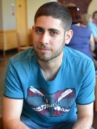

Welcome
I am a research associate at the University of Sheffield. I'm primarily based at SITraN working in Prof. Neil Lawrence's machine learning group, but I'm also member of Sheffield Robotics.My area of interest is Machine Learning with applications (mainly) in robotics, computational biology and computer vision.
My PhD degree had topic Deep Gaussian Processes and Variational Propagation of Uncertainty, and was obtained from the University of Sheffield under the supervision of Prof. Lawrence.
In February 2013 I completed an internship in Microsoft Research, Redmond, USA.
Previous studies: I obtained my MSc degree from the Department of Informatics at the University of Edinburgh and my BSc from the Department of Informatics & Telecommunications at the University of Athens.
Contact
Sheffield Institute for Translational Neuroscience385A Glossop Road, S10 2HQ, Sheffield, UK
Tel. (+44) 0114 2222271
News
- Feb. 2016 Visiting MIT, Brown, Harvard, MSR for 3 weeks and giving a series of talks / lectures.
- Feb. 2016 Our paper Latent Autoregressive GP Models for Robust System Identification" has been accepted at DYCOPS for oral presentation.
- Jan. 2016 Two papers accepted at ICLR: Recurrent GPs, Variational Auto-encoded Deep GPs.
- Nov. 2015 Attending the Deep Learning Alan Turing Institute Scope Workshop in Edinburgh.
- Oct. 2015 I gave a talk at the Athens University of Economics and Business, Greece.
- September 2015. Participating / presenting at the GP summer school in Sheffield (Slides, Video) .
- PhD Thesis! Final manuscript here.
- September 2015. Participating in BCBT, Barcelona.
- July 2015. Our paper "Variational Inference for Latent Variables and Uncertain Inputs in Gaussian Processes" has been accepted at JMLR.
- July 2015. Attending / speaking at Living Machines, Barcelona.
- July 2015. Attending ICML (workshops) in Lille and UAI in Amsterdam.
- June 29th, 2015. Visiting the Department of Engineering, University of Cambridge.
- June 23 - 24, 2015. Visiting IBM Research, Nairobi, Kenya.
- June 2015. Co-organising the Data Science School and Data Science Workshop in Africa, Nyeri, Kenya.
- June 10th, 2015. Visiting School of Computing Science, Glasgow.
- May 2015. Visiting KTH, Sweden for 10 days.